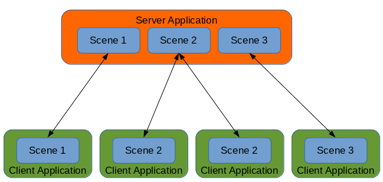
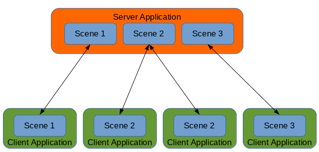

TheComet
Is it possible to have a single server application manage multiple scenes, and select which client should synchronize with which scene?
Here is a diagram showing what I want:


Is it possible to have a single server application manage multiple scenes, and select which client should synchronize with which scene?
Here is a diagram showing what I want:


I dont know if have something like this natively from Urho…
Im doing a MMORPG and I have a system with multiple maps (firstly I thought to use multiple scenes), so the way that Im doing its use one scene for server and one scene for client and handle this (what data map i should send to player etc) with my own code.
What I find confusing is how does Urho know about the scene server-side? On the client it makes sense, you pass the scene to Network::Connect, but on the server, Network::StartServer doesn’t take a scene as an argument…

@TheComet
You can call
Connection::SetScene(Scene*)
serverside on
ClientConnected::P_CONNECTION
. I think that should do the trick.
EDIT: Which makes me wonder if this is also the way to deal with fog-of-warlike situations?